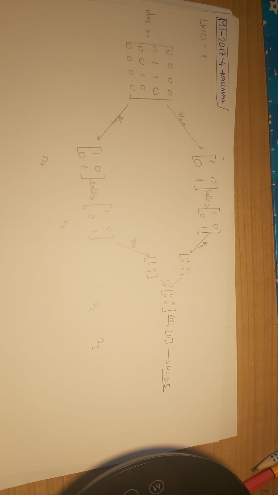

Zna li netko kako djeluje konvolucija kad iz npr. 2 ulazna kanala dobiva 1 izlazni kanal? Konkretno, radi se o 4. zad iz MI-2017, konvolucijski sloj 2 na ulazu prima 2 kanala, dakle 2 matrice, a na izlazu ima 1 kanal, dakle 1 matricu. Za obradu svakog ulaznog kanala ima po 1 matricu, to nije problem, međutim, kako se te matrice nakon obrade spoje? Je li se samo zbroje ili nešto drugo? Nisam našao nigdje drugdje primjer takvog rješenog zadatka
Konkretno,ovo je moje rješenje, nemam pojma je li dobro, pretpostavio sam da se rezultati konvolucija nad svakim kanalom zbrajaju:
